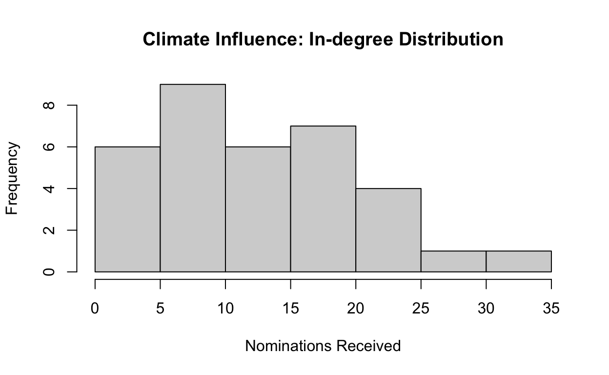
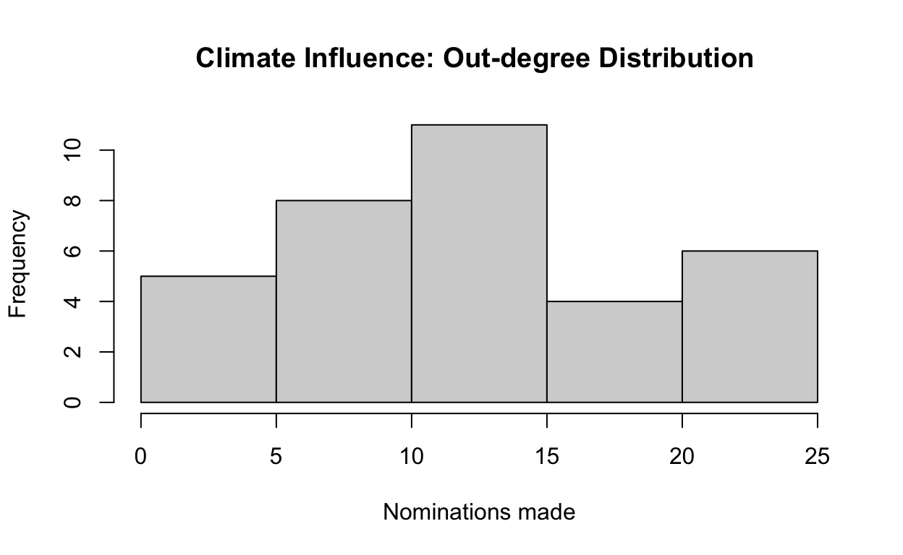

##Introduction This tutorial will demonstrate use of the R commands used to measure aspects of network data introduced in Week 3’s Lecture:
We will be using two datasets for this exercise. The first, Swiss Climate Influence network, was used in the Week 2 tutorial. The climate data includes ‘loops’, or ties from a node to itself because some states have nominated themselves. This will affect some of our calculations, but we will get to that later. The second is taken from the trade data included with the Corrrelates of War data, and the original data is based on annual trade flows between nation-states in 2007. From the description: “The dyadic trade dataset describes import and export data in current U.S. dollars for pairs of sovereign states.”
##Basic Network Description
Inspect the basic network descriptors for the trade2007 network. For this exercise, refer to tutorials from Weeks 1 and 2. This will help you get familiar with the dataset you are using.
#Find network size and type#Classify all dyads in the network#Classify all dyads in the network: igraph
igraph::dyad.census(trade2007.ig)
#Classify all dyads in the network: statnet
sna::dyad.census(trade2007.stat)#Classify all triads in the network#Classify all triads in the network: igraph
igraph::triad.census(trade2007.ig)
#Classify all triads in the network: statnet
sna::triad.census(trade2007.stat)#get global clustering cofficient: igraph
#get average local clustering coefficient: igraph
#get network transitivity: statnet#get global clustering cofficient: igraph
transitivity(trade2007.ig, type="global")
#get average local clustering coefficient: igraph
transitivity(trade2007.ig, type="average")
#get network transitivity: statnet
gtrans(trade2007.stat)#get number of components
#get size of each componentigraph::components(trade2007.ig)$no #Number of components
igraph::components(trade2007.ig)$csize #Size of each component##Density
The density of a network is defined as the proportion of ties present out of all possible ties in a network. Note that the network density command ignores edge values at present. If loops are present or there are multiple edges between two nodes, then the results may not make sense.
#get network density: igraph
graph.density(climate.ig)## [1] 0.4117647#get network density: statnet
network.density(climate.stat)## [1] 0.399654The output for the two packages is different. A closer look at the data suggests that a major different between them is how the two density calculations deal with “loops” - or ties from an actor to themselves. Some - but not all - actors in the climate network nominate themselves. (32 of 34 actors) It appears that network.density recognizes that loops are possible, while Igraph provides an incorrect density calculation as the default assumes that loops are not included but does not remove them. Therefore, the default calculation includes the loops in the numerator but not the denominator of the density calculation. After including the option loops=TRUE, Igraph provides an updated answer that accounts for loops in both numerator and denominator, same as the answer given by network.density.
#get network density without loops: igraph
graph.density(climate.ig, loops=TRUE)## [1] 0.399654Thre are often good reasons to ignore self-nominations even when they are present, however. The gden command includes loops but has an option to ignore the diagonal. Then it calculates density as all ties between actors \(i\) and \(j\) - so not including self-nominations. Note: gden() and network.density() deal with missing edges differently. The former omits missing edges from numerator but not denominator, the latter omits from both.
#get network density without loops: statnet
gden(climate.stat, diag=FALSE)## [1] 0.3921569###Exercise: Network Density
Calculate network density for the trade2007 network. Given the attributes of this network, does it matter which package you use for this calculation? Based on the loops explanation for the climate output, could this account for the difference? What else could be going on? You may want to go back and look carefully at both versions of the trade2007 network. Does the answer change if you use the binary network where ties exist only if trade is more than 100 million?
#get network density: igraph or statnet#get network density: igraph
graph.density(trade2007.ig)
#get network density: statnet
network.density(trade2007.stat)
#get network density: statnet
network.density(trade100.stat)##Vertex Degree
One measure of node centrality or popularity is node degree: a count of the relationships that a node is involved in or the count of the edges that are incident to a vertex. Vertex degree is a description of an individual node; each vertex in a network may have a different node degree.
#Calculate average network degree: igraph
igraph::degree(climate.ig)## AA AB AC AD AE AF AG AH AI AJ AK AL AM AN AO AP AQ AR AS AT AU AV AW AX AY AZ
## 39 20 32 21 35 30 26 16 31 13 17 45 16 46 30 46 34 31 44 21 16 29 20 25 21 14
## BA BB BC BD BE BF BG BH
## 30 39 6 48 32 16 31 4#Calculate average network degree: statnet
sna::degree(climate.stat)## [1] 37 18 30 21 33 28 24 16 29 11 17 43 16 44 28 44 32 31 42 19 16 27 18 25 21
## [26] 14 28 37 6 46 30 16 29 4Two differences between the two commands are clearly visible. First, sna::degree ignores loops or self-nominations, while igraph::degree includes loops. Including the option loops=FALSE in the igraph::degree command will make the two commands equivalent for this data set. Note that setting diag=TRUE in sna::degree does not guarentee equivalence as statnet only single counts the loops in a directed network, while igraph double-counts the loops.
Second, the Igraph command also provides node name along with node degree, which can be helpful if you would like to know the degree of a particular node. As you can imagine, however, this list can be quite difficult to interpret in datasets with 100s or 1000s of nodes or when nodes have long names. Therefore, we rarely use the degree command to list the degree of all nodes, but instead use the network degree command to:
##Review: Create a DataFrame
Regardless of the way(s) in which we plan to use network degree meaures, it will be useful to store vertex attributes such as degree in a table of node attributes. This table, or data frame, of node measures can even be used in traditional econometric models that include network structure variables. Here is an example of the basic R command to create a dataframe with named variables names and degree, and row names set as the entries in the names variable. For more details, see the tutorial Basic.Dataframe.
# create a dataset of vertex names and degree: igraph
climate.nodes<-data.frame(name=V(climate.ig)$name, degree=igraph::degree(climate.ig))Here are the same commands in igraph, but not evaluated to avoid repitition.
# create a dataset of vertex names and degree: statnet
climate.nodes<-data.frame(name=climate.stat%v%"vertex.names", degree=sna::degree(climate.stat))
climate.nodesFor those who need a quick breakdown of what these commands do:
climate.nodes is a dataframe that we are creating within R.names and degree are two variables (columns) in climate.nodesnames variable is made up of the vertex names from climate.ig or climate.statnetdegree variable is calculated from the climate dataset.###Exercise: Create a dataframe
You can do the same thing with the trade2007 dataset. The goal is to create a dataframe of names and degrees, so using the code above, simply replace the climate elements with trade2007
# create a dataset of vertex names and degree: igraph or statnet# create a dataset of vertex names and degree: igraph
trade2007.nodes<-data.frame(name=V(trade2007.ig)$name, degree=igraph::degree(trade2007.ig))
trade2007.nodes ##return the dataframe
# create a dataset of vertex names and degree: statnet
trade2007.nodes<-data.frame(name=trade2007.stat%v%"vertex.names", degree=sna::degree(trade2007.stat))
trade2007.nodes ##return the dataframe##Degree in Directed Networks
In a directed network, it is possible to calculate both indegree or the total number of nodes that send a tie to the focal node, and outdegree, or the total number of nodes to which the focal node sends a tie. R allows you to specify whether you want to calculate in-degree, out-degree or total degree when working with a directed network. By default, the function degree produces a count of total degree.
#calculate in-degree: statnet
sna::degree(climate.stat, cmode="indegree")## [1] 30 14 12 12 18 5 19 10 15 0 0 21 6 32 10 19 17 17 18 7 13 13 10 9 6
## [26] 0 7 22 1 25 22 7 19 4#calculate out-degree: statnet
sna::degree(climate.stat, cmode="outdegree")## [1] 7 4 18 9 15 23 5 6 14 11 17 22 10 12 18 25 15 14 24 12 3 14 8 16 15
## [26] 14 21 15 5 21 8 9 10 0Here are the same commands in igraph, but not evaluated to avoid repitition.
#calculate in-degree: igraph
igraph::degree(climate.ig,mode="in", loops = FALSE)
#calculate out-degree: igraph
igraph::degree(climate.ig,mode="out", loops = FALSE)To make use of these calculations, you’ll want to attach them to the dataframe you created in the last exercise. To do this, we can use the mutate command to add columns onto the climate.nodes object created before. See Basic.Dataframe tutorial for an introduction. Note that we can separate multiple variable create commands within mutate with a comma.
#statnet version:
climate.nodes<-climate.nodes %>%
mutate(indegree=sna::degree(climate.stat, cmode="indegree"),
outdegree=sna::degree(climate.stat, cmode="outdegree"))
climate.nodesHere are the same commands in igraph, but not evaluated to avoid repitition.
#igraph version:
climate.nodes<-climate.nodes %>%
mutate(indegree=igraph::degree(climate.ig, mode="in", loops=FALSE),
outdegree=igraph::degree(climate.ig, mode="out", loops=FALSE))###Exercise Now, do the same for the trade2007 network. create a dataframe that includes all three measures of degree: total degree, indegree, and outdegree. To do this, you’ll simply need to add the codes of totdegree, indegree and outdegree to replace the initial degree column. You don’t need to evaluate the degrees before attaching them to the dataframe.
#attach the in, out, and total degree values to the dataframe#igraph version:
trade2007.nodes<-data.frame(name=V(trade2007.ig)$name,
totdegree=igraph::degree(trade2007.ig, loops=FALSE),
indegree=igraph::degree(trade2007.ig, mode="in", loops=FALSE),
outdegree=igraph::degree(trade2007.ig, mode="out", loops=FALSE))
trade2007.nodes
#statnet version:
trade2007.nodes<-data.frame(name=trade2007.stat%v%"vertex.names",
totdegree=sna::degree(trade2007.stat),
indegree=sna::degree(trade2007.stat, cmode="indegree"),
outdegree=sna::degree(trade2007.stat, cmode="outdegree"))
trade2007.nodes##Network Degree Summary Statistics
What does the distribution of these scores look like? We can use the basic summary command to find the range, mean, median and standard deviation of a vector.
#create a vector with the numbers 1 to 10
v<-c(1:10)
#summary statistics of x
summary(v)## Min. 1st Qu. Median Mean 3rd Qu. Max.
## 1.00 3.25 5.50 5.50 7.75 10.00Now, we can use the same command to get basic summaries for all the columns in a dataframe. In this case, we will get summary statistics for the climate network node attributes.
#get summary statistics for node attributes
summary(climate.nodes)## name degree indegree outdegree
## AA : 1 Min. : 4.00 Min. : 0.00 Min. : 0.00
## AB : 1 1st Qu.:17.25 1st Qu.: 7.00 1st Qu.: 8.25
## AC : 1 Median :27.50 Median :12.50 Median :14.00
## AD : 1 Mean :25.88 Mean :12.94 Mean :12.94
## AE : 1 3rd Qu.:31.75 3rd Qu.:18.75 3rd Qu.:16.75
## AF : 1 Max. :46.00 Max. :32.00 Max. :25.00
## (Other):28###Exercise: Summary Statistics
Try getting summary statistics for node degree in the 2007 trade network.
#get summary statistics for trade network node attributessummary(trade2007.nodes)###ADVANCED Exercise Try getting summary statistics for node degree for the binary network degree, creating the appropriate dataframe in this exercise and getting the summary. Unlike other exercises, we do not provide the correct dataframe for you to access!
#get summary statistics for binary trade100 network node attributessummary(data.frame(name=trade100.stat%v%"vertex.names",
totdegree=sna::degree(trade100.stat),
indegree=sna::degree(trade100.stat, cmode="indegree"),
outdegree=sna::degree(trade100.stat, cmode="outdegree")))##ADVANCED: Summarise by Group
There are often times when we may want to know about groups of nodes, not everyone in the network. For example, maybe we care about average network characteristics of characters in the game of thrones grouped by family or age. Here is a basic example of creating summary statistics for groups, see Basic.Dataframe or https://dplyr.tidyverse.org/ for further details.
#ADVANCED: summarise by type
df%>%
group_by(type)%>%
summarise_all(funs(mean, n()))## Warning: funs() is soft deprecated as of dplyr 0.8.0
## Please use a list of either functions or lambdas:
##
## # Simple named list:
## list(mean = mean, median = median)
##
## # Auto named with `tibble::lst()`:
## tibble::lst(mean, median)
##
## # Using lambdas
## list(~ mean(., trim = .2), ~ median(., na.rm = TRUE))
## This warning is displayed once per session.###Exercise
Try attaching the “type5” attribute to the climate node dataframe. Can you summarise the data after grouping by organization type?
##Network Degree Distribution The command hist is a basic R command that draws a histogram of vector of data. We can set options such as main for the main title of the histogram and xlab for the label of the x-axis. Here is a toy example.
Let’s check out the histogram for the distribution of node degree for the climate network. What do you make of the differences in the two histograms?
#create a histogram of Climate Influence Indegree
hist(climate.nodes$indegree, main="Climate Influence: In-degree Distribution", xlab="Nominations Received")
hist(climate.nodes$outdegree, main="Climate Influence: Out-degree Distribution ", xlab="Nominations made")
###Exercise Now, try creating histograms of in and out degree for the 2007 trade network.
hist(trade2007.nodes$indegree, main="2007 Trade Flows: In-degree Distribution", xlab="Import Connection")
hist(trade2007.nodes$outdegree, main="2007 Trade Flows: Out-degree Distribution ", xlab="Export Connection")We can also calculate a network-level centralization score based on actor degree scores. The statnet command is a little more straightforward, as the same centralization command is used to find network centralization regardless of which measure you of centralization you are interested in (e.g., degree, betweeness, closeness, eigenvalue, etc). All you need to do is specify the degree option to calculate degree centralization, and use the same options as used in the degree command. What might be the interpretation of different centralization scores for in-degree and out-degree in the climate network?
#get network centralization score: statnet
centralization(climate.stat, degree, cmode="indegree")## [1] 0.5950413centralization(climate.stat, degree, cmode="outdegree")## [1] 0.3764922The centr_degree function returns an object with several components, we are interested in the centralization component. It requires specification of options as in the igraph::degree command used above. This code is not evaluated to avoid repitition.
#get network centralization score: igraph
centr_degree(climate.ig, loops = FALSE, mode="in")$centralization
centr_degree(climate.ig, loops = FALSE, mode="out")$centralization###Exercise: Network degree centralization
Calculate network degree centralization scores for both in-degree and out-degree using the 2007 trade network. Compare to the degree centralization scores for the binary trade network with a threshold of $100 million for a tie.
#get network degree centralizationcentralization(trade2007.stat, degree, cmode="indegree")
centralization(trade2007.stat, degree, cmode="outdegree")
centralization(trade100.stat, degree, cmode="indegree")
centralization(trade100.stat, degree, cmode="outdegree")##Identifying Specific Nodes There may be times when we are interested in identifying and describing nodes with specific values, such as the nodes with the most or the fewest number of network ties. In order to identify these nodes, we will need to sort vectors and print out a subset of the possible nodes.
###Basic commands: sorting
As a reminder, we use the arrange command to sort data objects in R. See the tutorial Basics.Dataframe for more details.
#sort a vector
df<-data.frame(scores=c(55,23,48,3,112,14,25), type=c("A", "B", "A", "B","B","A", "B"))
arrange(df,scores)desc() option in arrange puts the largest values at the top of the list rather than the bottom.
Using the slice(t) command tells R to return only the tth row of the data object. In this case, we tell R to return rows 1,2 and 3 (1:3) of the data object arranging in descening order by scores - or the top three scores.
###Exercise: sorting Try sorting a vector of vertex degree for the climate data, and list the 5 nodes with the highest indegree. Can you also list the five nodes with the lowest indegree? How about the highest outdegree?
#sort the indegree vector of nodes in the climate network#sort the indegree vector of nodes in the climate network
arrange(climate.nodes, desc(indegree))%>%slice(1:5)
arrange(climate.nodes, desc(outdegree))%>%slice(1:5)
arrange(climate.nodes, indegree)%>%slice(1:5)###Exercise 2 Do the same thing for the trade2007 dataset. For this, simply replace the dataframe name from the previous exercise:
#sort the indegree vector of nodes in the trade2007 network#sort the indegree vector of nodes in the climate network
arrange(trade2007.nodes, desc(indegree))%>%slice(1:5)
arrange(trade2007.nodes, desc(outdegree))%>%slice(1:5)
arrange(trade2007.nodes, indegree)%>%slice(1:5)###ADVANCED Exercise Can you find the low and high degree nodes for the binary trade network? You will need to use some creativity in figuring out the best way to code this.
#sort to find 5 highest and lowest degree nodes in trade100#sort to find 5 highest and lowest degree nodes in trade100
temp<-data.frame(name=trade100.stat%v%"vertex.names",
indegree=sna::degree(trade100.stat, cmode="indegree"),
outdegree=sna::degree(trade100.stat, cmode="outdegree"))
temp%>%
arrange(desc(indegree))%>%
slice(1:5)
temp%>%
arrange(indegree)%>%
slice(1:5)
temp%>%
arrange(desc(outdegree))%>%
slice(1:5)
temp%>%
arrange(outdegree)%>%
slice(1:5)